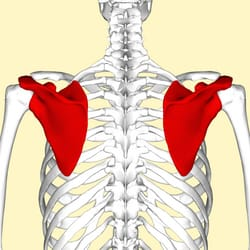
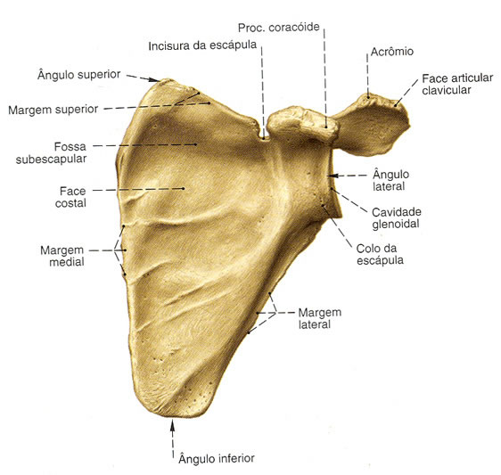
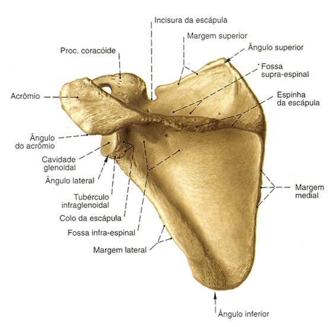
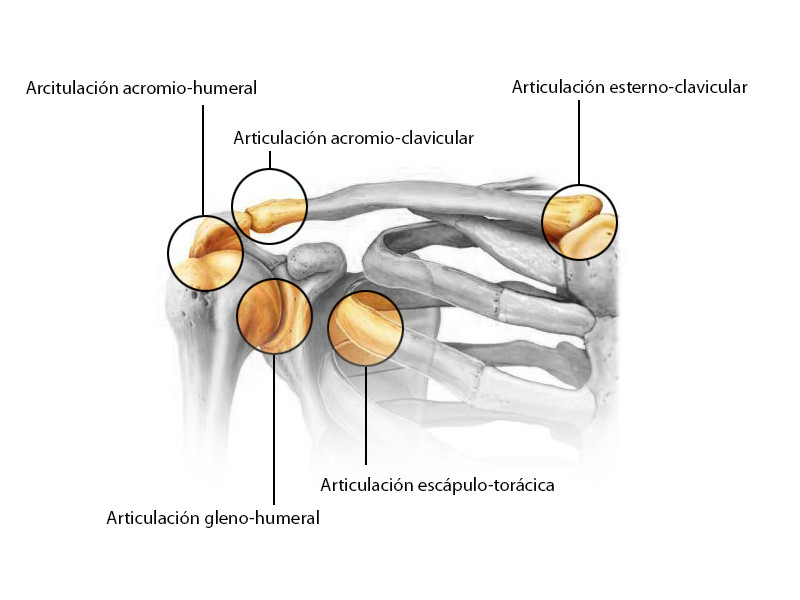

Tecnológico Boliviano Alemán
Por: Jhery Quito Rivera
Huesos de los Miembros Superiores
La escápula es un hueso plano, triangular y par que forma parte de la cintura escapular. Se localiza en la región posterior del tórax y sirve como punto de inserción para numerosos músculos que participan en los movimientos del hombro y del brazo.



